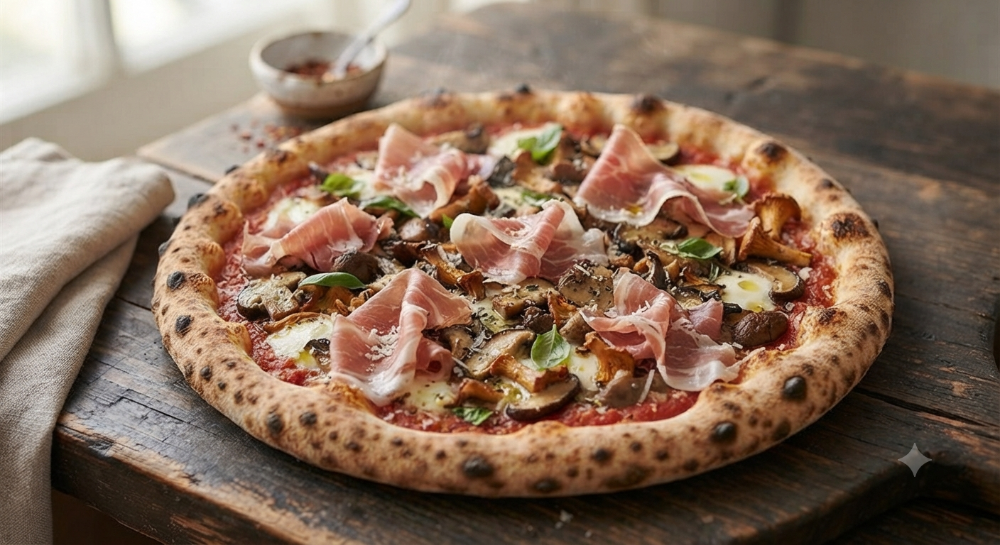
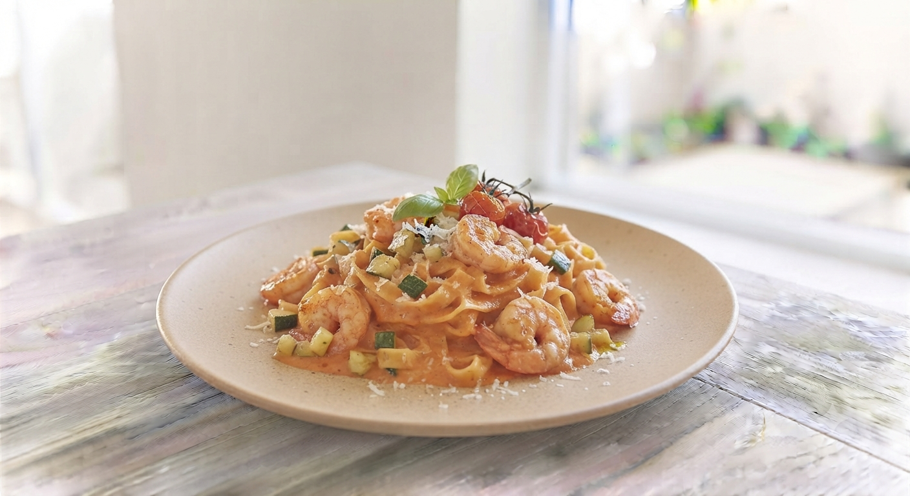

週末・ランチは混み合います
ご予約はお電話がスムーズです

生地から
手作り！
レストラン・チョウジのピザは、その日の仕入れ状況によってメニューが変わります。鮮度抜群の食材を、熟練の技術で一気に焼き上げる。シンプルだからこそ誤魔化しのきかない、本格イタリアンの真髄をご堪能ください。
独自の配合でブレンドし、低温でじっくり発酵させた自家製生地。
地元の新鮮な野菜や、厳選されたチーズを惜しみなく使用。
「米まで美味しい！」
「ハンバーグのデミソースもサラダも最高。たまたま入ったけど、山形に来たら絶対寄りたいお店です。」
「家族で大満足」
「ピザもパスタも絶品。予約必須ですが、それだけの価値があります。レディースデーのアイスも嬉しい！」
「上品なハンバーグ」
「粗挽きすぎない、口当たりの良い上品な味。落ち着いた空間でゆったり食事が楽しめます。」
「お一人様でも安心」
「ホテルの提携クーポンで利用。敷居が高そうに見えましたが、快く迎えてくれてリーズナブルでした。」
出張での一人ご飯から、大切な家族とのランチ、大人数のパーティーまで。レストラン・チョウジが選ばれる理由があります。
出張や観光の合間に
お車でのご来店も安心
宴会・パーティーにも対応
カウンター・ボックス・座敷

お子様連れ
大歓迎！
お食事をご注文の女性のお客様全員が対象です。
徒歩1分にある「やまぎん県民ホール」をご利用の皆様へ。
もっと便利に、もっと楽しく過ごしていただけるよう、新しいサービスを準備中です！
開演までのちょっとした待ち時間に。公演チケットのご提示でドリンク割引サービスや、手軽に片手で楽しめる特製フォカッチャサンドなどのテイクアウトメニューを企画中！
コンサートや舞台の余韻に浸りながら感想を語り合える特別夜間営業。チケットの半券のご提示で「乾杯スパークリングワイン」または「プチドルチェ」をプレゼント！
皆様のご要望に合わせてサービスをアップデートしてまいります。